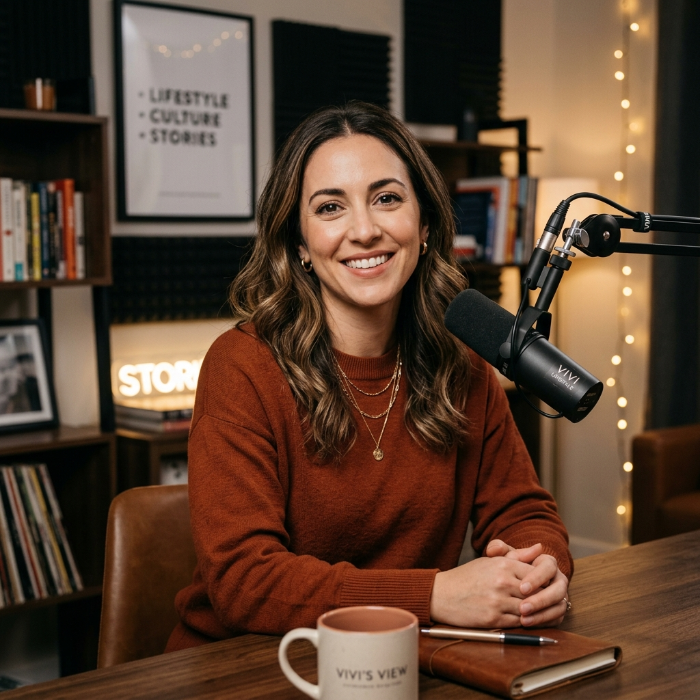

城市裡的孤獨經濟
為什麼我們在社交網絡上擁擠，卻在現實生活中感到孤立？探討現代人的情感需求...
LISTEN TO THE SOUL →Lifestyle / Human / Emotion
「在文字抵達不了的地方，我們用聲音擁抱彼此。」
我是 Vivi。在這裡，我們聊關於成長的痛楚、生活的微光、與所有讓靈魂顫動的瞬間。讓對話回歸最原始的溫度。

為什麼我們在社交網絡上擁擠，卻在現實生活中感到孤立？探討現代人的情感需求...
LISTEN TO THE SOUL →如何透過整理物理空間，來釐清內在混亂的思緒。這是一場關於捨棄的修行...
LISTEN TO THE SOUL →聊聊那些曾在深夜治癒過我們的經典電影，以及它們所承載的時代情感...
LISTEN TO THE SOUL →